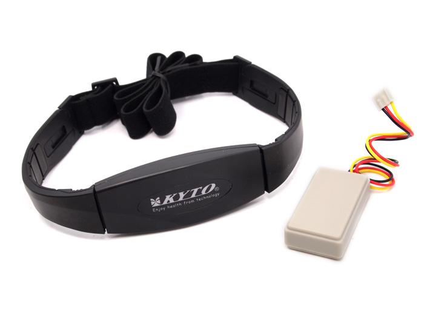
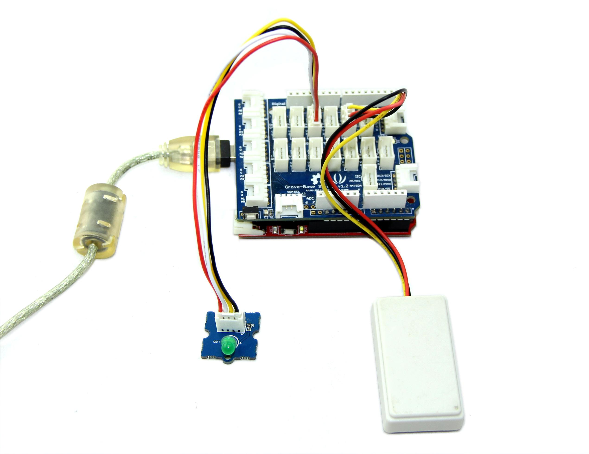
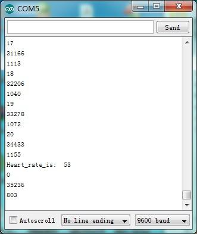
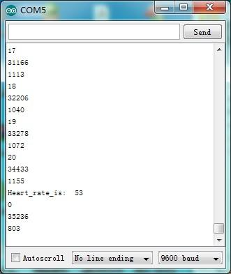

The heart rate chest belt kit contains a chest belt and a 5.3K Hz AM receiver module. The heart rate measure kit can be used to monitor the heart rate of patients and athletes, meanwhile the result can be displayed on a screen via serial port and saved for analysis. The entire system has lots of advantages, e.g. high sensitivity, low power consumption and portability. Because the modules communicate with each other via AM, it is very convenient to let you move (notice that the effective distance is 30cm).

| Item | Min | Typical | Max | Unit |
|---|---|---|---|---|
| Voltage | 3.0 | 5.0 | 5.5 | V |
| bust range | 65 | - | 145 | cm |
| Modulation mode | 5.3KHz AM modulate | / | ||
| Battery life | more than a half year (depending on your usage) | / | ||
| Effective receiving distance | 30 | cm | ||
| Receiving modules | 48 X 25 X 10 | mm | ||
The following sketch demonstrates a simple application of using the Chest Strap Heart Rate Sensor to measure heart rate.

#define LED 4//indicator, Grove - LED is connected with D4 of Arduino
boolean led_state = LOW;//state of LED, each time an external interrupt
//will change the state of LED
unsigned char counter;
unsigned long temp[21];
unsigned long sub;
bool data_effect=true;
unsigned int heart_rate;//the measurement result of heart rate
const int max_heartpluse_duty = 2000;//you can change it follow your system's request.
//2000 meams 2 seconds. System return error
//if the duty overtrip 2 second.
void setup()
{
pinMode(LED, OUTPUT);
Serial.begin(9600);
Serial.println("Please ready your chest belt.");
delay(5000);
arrayInit();
Serial.println("Heart rate test begin.");
attachInterrupt(0, interrupt, RISING);//set interrupt 0,digital port 2
}
void loop()
{
digitalWrite(LED, led_state);//Update the state of the indicator
}
/*Function: calculate the heart rate*/
void sum()
{
if(data_effect)
{
heart_rate=1200000/(temp[20]-temp[0]);//60*20*1000/20_total_time
Serial.print("Heart_rate_is:\t");
Serial.println(heart_rate);
}
data_effect=1;//sign bit
}
/*Function: Interrupt service routine.Get the sigal from the external interrupt*/
void interrupt()
{
temp[counter]=millis();
Serial.println(counter,DEC);
Serial.println(temp[counter]);
switch(counter)
{
case 0:
sub=temp[counter]-temp[20];
Serial.println(sub);
break;
default:
sub=temp[counter]-temp[counter-1];
Serial.println(sub);
break;
}
if(sub>max_heartpluse_duty)//set 2 seconds as max heart pluse duty
{
data_effect=0;//sign bit
counter=0;
Serial.println("Heart rate measure error,test will restart!" );
arrayInit();
}
if (counter==20&&data_effect)
{
counter=0;
sum();
}
else if(counter!=20&&data_effect)
counter++;
else
{
counter=0;
data_effect=1;
}
}
/*Function: Initialization for the array(temp)*/
void arrayInit()
{
for(unsigned char i=0;i < 20;i ++)
{
temp[i]=0;
}
temp[20]=millis();
}
 

In the left of the figures which is a waveform diagram of the detected heartbeat, A high pulse comes when beating.
Note:
If you have questions or other better design ideas, you can go to our forum;or wish to discuss.
Copyright (c) 2008-2016 Seeed Development Limited (www.seeedstudio.com / www.seeed.cc)